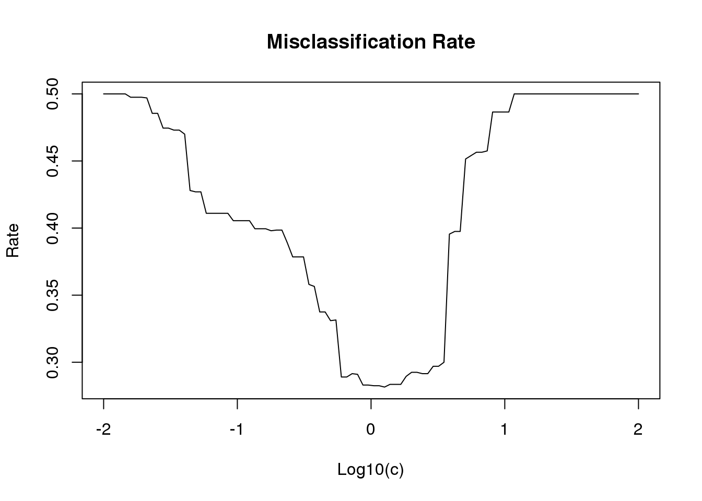
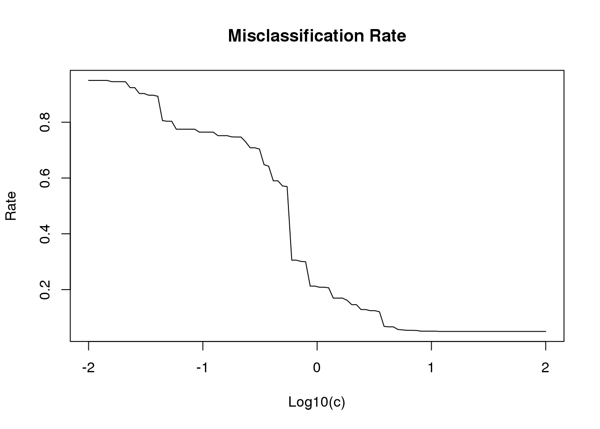
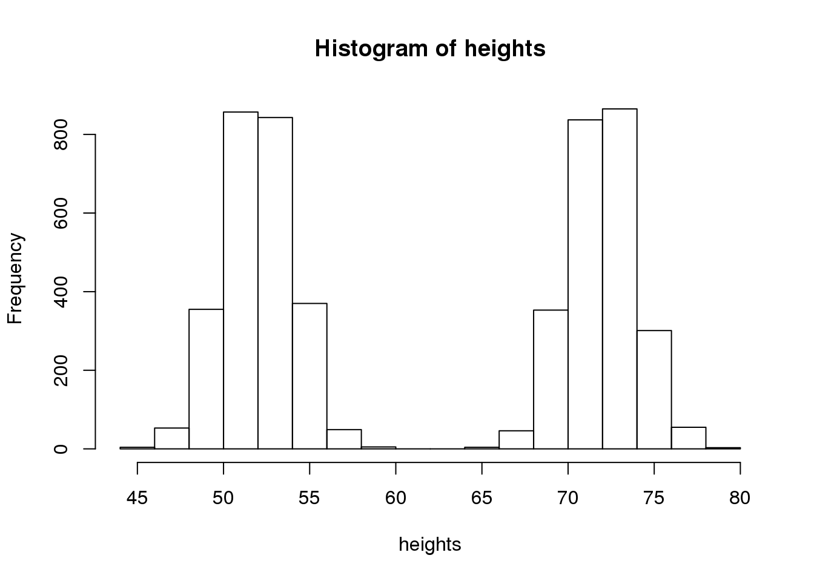
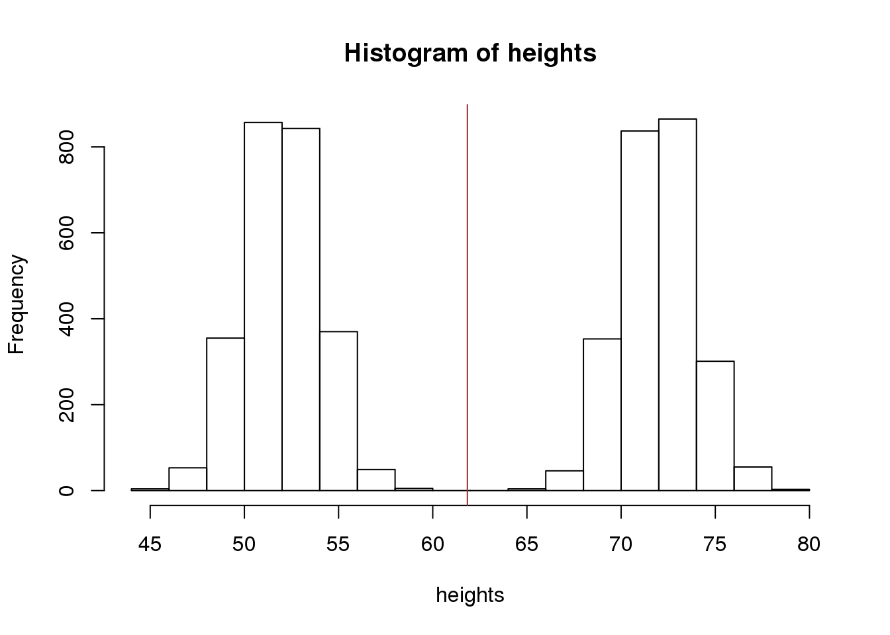
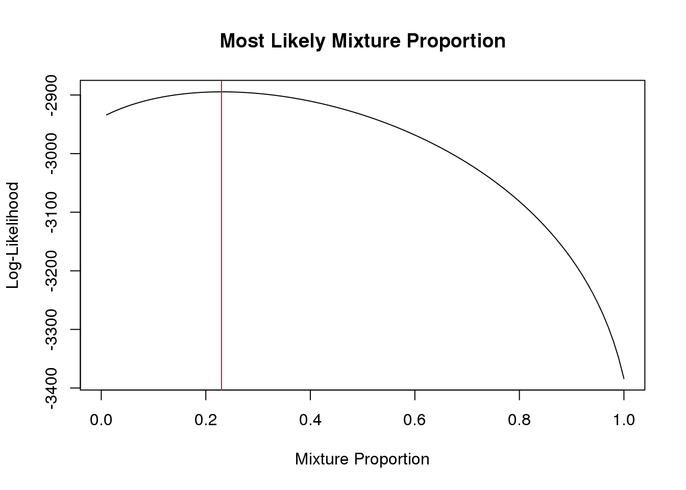
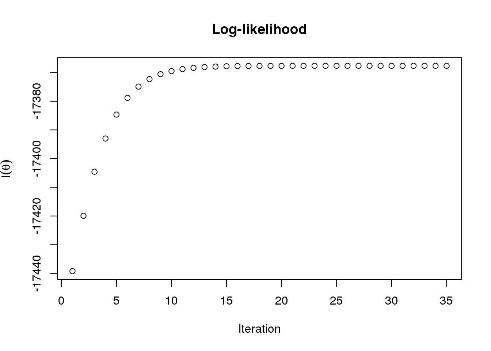
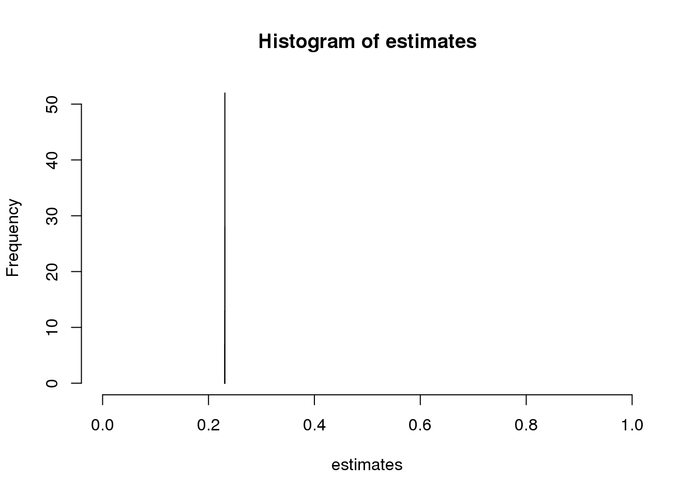

Last updated: 2017-04-10
Code version: e75cac0
For this problem, my intuition says that I should believe he rolled the blue die. To state this formally we have our data represented by which numbers were actually rolled and our models represented by the probability of rolling those numbers given the blue or green die.
We can represent our data as a vector of frequencies for having rolled the numbers one through six and our models as probability vectors for rolling those numbers based on the sides of each die.
x <- c(1, 2, 6, 1, 0, 0) # data
fB <- c(1/6, 1/6, 1/2, 1/6, 0, 0) # blue dice model
fG <- c(1/6, 1/3, 1/6, 1/3, 0, 0) # green dice model
#' Likelihood function
#'
#' @param f vector of probabilities of success
#' @param x vector of successes and failures
#'
calculate_likelihood <- function(f, x) {
prod(f^x * (1 - f)^(1 - x))
}
LR <- calculate_likelihood(fB, x)/calculate_likelihood(fG, x) # likelihood ratio
print(LR)[1] 937.5We can see that our intuition was right! The chances of having rolled the blue die are 937.5 times more likely than having rolled the green die to generate those data.
(a)
Below is the code for running simulations:
#' Simluate tusks
#'
#' Simulates genotype data of elephant tusks using a multinomial model
#'
#' @param nS number of savanna tusks to use
#' @param nF number of forest tusks to use
#' @param fS allele frequencies of savanna elephants
#' @param fF allele frequencies of forest elephants
#'
#' @return list of simulated tusks
#'
#' @example simulate_tusks(1000, 1000, c(0.40,0.12,0.21,0.12,0.02,0.32), c(0.8,0.2,0.11,0.17,0.23,0.25))
#'
#'
simulate_tusks <- function(nS, nF, fS, fF) {
sS <- replicate(nS, sapply(fS, function(x) {
sample(c(1, 0), 1, prob = c(x, 1 - x), replace = TRUE)
}))
sF <- replicate(nF, sapply(fF, function(x) {
sample(c(1, 0), 1, prob = c(x, 1 - x), replace = TRUE)
}))
return(list(S = sS, F = sF))
}
#' Compute misclassification rates
#'
#' Using a vector of log10 threshold values, calculate the rate of misclassification
#'
#' @param lr likelihood ratios computed for tusks
#' @param lc vector of log10(c) values of LR cutoff to us
#'
#' @return list of lists of simulated tusks
#'
#' @example compute_misclassification_rate(data, seq(-2,2,length=100))
#'
#'
compute_misclassification_rate <- function(lr, lc) {
l1 <- unlist(lapply(lc, function(c) {
sum(log10(lr$S) <= c)
})) # incorrectly classified as Savanna elephants
l2 <- unlist(lapply(lc, function(c) {
sum(log10(lr$F) > c)
})) # incorrectly classified as Forest elephants
rates <- (l1 + l2)/(length(lr$S) + length(lr$F))
return(rates)
}
#' Run Simulation
#'
#' Simulates data from forest and savanna tusks from prespecified frequencies, and uses LR to classify them.
#'
#' @param nS number of savanna tusks to use
#' @param nF number of forest tusks to use
#' @param fS allele frequencies of savanna elephants
#' @param fF allele frequencies of forest elephants
#' @param lc vector of log(c) values of LR cutoff to use
#'
#' @return Miscalculation rates based on cutoffs
#'
#' @example run_simulation(1000, 1000, c(0.40,0.12,0.21,0.12,0.02,0.32), c(0.8,0.2,0.11,0.17,0.23,0.25), seq(-2,2,length=100))
#'
#'
run_simulation <- function(nS, nF, fS, fF, lc) {
# simulate tusks
data <- simulate_tusks(nS, nF, fS, fF)
# compute likelihood ratios
LRS <- apply(data$S, 2, function(x) {
calculate_likelihood(fS, x)
})/apply(data$S, 2, function(x) {
calculate_likelihood(fF, x)
})
LRF <- apply(data$F, 2, function(x) {
calculate_likelihood(fS, x)
})/apply(data$F, 2, function(x) {
calculate_likelihood(fF, x)
})
# compute misclassification rate
rates <- compute_misclassification_rate(lr = list(S = LRS, F = LRF), lc)
return(rates)
}When we run the simulation for 1000 Savanna elephant tusks and 1000 Forest elephant tusks:
seed <- 37
nS <- 1000
nF <- 1000
fS <- c(0.4, 0.12, 0.21, 0.12, 0.02, 0.32)
fF <- c(0.8, 0.2, 0.11, 0.17, 0.23, 0.25)
lc <- seq(-2, 2, length = 100)
set.seed(seed)
results <- run_simulation(nS, nF, fS, fF, lc)
plot(seq(-2, 2, length = 100), results, type = "l", main = "Misclassification Rate",
xlab = "Log10(c)", ylab = "Rate")
We can see that the value of c that minimizes our misclassification rate is 1.2618569.
(b)
When we run the simulation for 100 Savanna elephant tusks and 1900 Forest elephant tusks:
nS <- 100
nF <- 1900
fS <- c(0.4, 0.12, 0.21, 0.12, 0.02, 0.32)
fF <- c(0.8, 0.2, 0.11, 0.17, 0.23, 0.25)
lc <- seq(-2, 2, length = 100)
set.seed(seed)
results <- run_simulation(nS, nF, fS, fF, lc)
plot(seq(-2, 2, length = 100), results, type = "l", main = "Misclassification Rate",
xlab = "Log10(c)", ylab = "Rate")
We can see that the value of c that minimizes our misclassification rate is 11.7681195.
We can modify the tusk example by including a bernoulli random variable with a chance of success of 0.98. This can be added to the code as it is below using the rbinom() function.
x <- c(1, 0, 1, 0, 0, 1)
x <- sapply(x, function(x) {
ifelse(rbinom(1, 1, 0.98) == 1, x, 1 - x)
})
fS <- c(0.4, 0.12, 0.21, 0.12, 0.02, 0.32)
fF <- c(0.8, 0.2, 0.11, 0.17, 0.23, 0.25)
LR <- calculate_likelihood(fS, x)/calculate_likelihood(fF, x)
print(LR)[1] 1.81359Suppose that we receive a data set of adult, human heights. We don’t know what kinds of humans, exactly, but we know that they are adults. The first thing we might want to do is explore and describe our data. Now suppose our data looks like this:

Based on what we know about the distribution of adult, human heights we might have expected it to look like a gaussian distribution, but here we clearly see what looks like two normal distributions next to one another. What would be the expected height if we simply calculated the mean of all of our data? Let’s create another plot with the mean highlighted in red:

Does this make sense?
Calculating the mean in this way assumes that the data comes from a unimodal distribution, but we can clearly see here that we have what’s called a multimodal distribution. We can imagine how this might be the case if we consider the fact that women are, on average, shorter than men. Thus, it could be that the data we received contained heights that weren’t gender biased. That is, the data contains the heights recorded from both men and women. In other words, our the data was actually sampled from a population that can more accurately be described by separating it into a distinct number of subpopulations. In this case, 2; one for males and one for females.
In order to model this, we use what’s called a mixture model where we assume that the to modes within our data represent data that was sampled from two independent distributions.
We can represent the probability of heights using the following equation:
\[ P(X_{i} = x) = \sum_{k=1}^{K}P(X_{i} = x|Z_{i} = k)P(Z_{i} = k) = \sum_{k=1}^{K}P(X_{i}|Z_{i} = k)\pi_{k} \]
Where \(Z_{i}\) is the latent variable that provides the category (male or female here) for our recorded data point and \(\pi_{k}\) is the proportion of the population that’s either one category or the other.
Therefore the likelihood function for our model would be:
\[ L(\pi) = \prod_{i=1}^{n}P(X_{i}|\pi) = \prod_{i=1}^{n}\sum_{k=1}^{K}P(X_{i}|Z_{i} = k)\pi_{k} \]
(a)
An R function to simulate genetic data for tusks:
#' Simulate tusks from a mixture distribution
#'
#' @param N number of tusks to simulate
#' @param w vector of mixture proportions of length K that sums to 1
#' @param F K by M matrix of allele frequencies, where M is the number of markers
#'
#' @return list containing an N by M matrix of data and an N vector of component memberships
#'
#' @example sim_mixture_tusks(10,c(0.4,0.6),matrix(c(0.40,0.12,0.21,0.12,0.02,0.32,0.8,0.2,0.11,0.17,0.23,0.25),ncol=2))
#'
#'
sim_mixture_tusks <- function(N, w, F) {
# intialize memberships vector
memberships <- numeric(N)
# initialize output data matrix
data <- matrix(0, nrow = N, ncol = nrow(F))
# for the number of samples...
for (i in 1:N) {
# which category are we randomly choosing based on our mixture proportions
z <- which.max(rmultinom(n = 1, size = 1, prob = w))
memberships[i] <- z
# generate identifier for individual markers
data[i, ] <- sapply(F[, z], function(x) {
sample(c(1, 0), 1, prob = c(x, 1 - x))
})
}
return(list(X = data, Z = memberships))
}(b)
An R function to compute the log-likelihood for the simulated data set:
#' Calculate the log-likelihood of a data matrix
#'
#' @param X N by M matrix of N samples by M genetic markers
#' @param w vector of mixture proportions of length K that sums to 1
#' @param F K by M matrix of allele frequencies, where M is the number of markers
#'
#' @return log-likelihood under the model for our data set
#'
#' @example calculate_log_likelihood(X,c(0.4,0.6),matrix(c(0.40,0.12,0.21,0.12,0.02,0.32,0.8,0.2,0.11,0.17,0.23,0.25),ncol=2))
#'
calculate_log_likelihood <- function(X, w, F) {
# s is the log-likelihood for each row
s <- apply(X, 1, function(x) {
#
v <- numeric(length(w))
for (k in 1:length(w)) {
v[k] <- calculate_likelihood(F[, k], x) * w[k]
}
sum(v)
})
return(sum(log(s)))
}(c)
Now to test the functions:
N <- 1000
w <- c(0.25, 0.75)
F <- matrix(c(0.4, 0.12, 0.21, 0.12, 0.02, 0.32, 0.8, 0.2, 0.11, 0.17, 0.23,
0.25), ncol = 2)
set.seed(seed)
data <- sim_mixture_tusks(N, w, F)
calculate_log_likelihood(data$X, w, F)[1] -2894.828Now we can sweep through different values of our mixture proportions to see where we see the highest likelihood:
# number of values to test
steps <- 100
# vector of mixture proportions
wl <- seq(0.01, 1, length = steps)
# log-likelihoods for each mixture proportion
lls <- sapply(wl, function(x) {
w <- c(x, 1 - x)
calculate_log_likelihood(data$X, w, F)
})
# plot the results along with the maximum likelihood
plot(wl, lls, type = "l", xlim = c(0, 1), ylab = "Log-Likelihood", xlab = "Mixture Proportion",
main = "Most Likely Mixture Proportion")
abline(v = wl[which.max(lls)], col = "red")
Instead of sweeping through every possible value of \(w\), we can use an EM algorithm to estimate the most likely mixture proportions.
To do this, we first need to rewrite our function to calculate log-likelihoods:
#' Calculate the log-likelihood of a data matrix
#'
#' @param X N by M matrix of N samples by M genetic markers
#' @param w vector of mixture proportions of length K that sums to 1
#' @param L N by K matri of likelihoods
#'
#' @return log-likelihood under the model for our data set
#'
#' @example calculate_log_likelihood2(X,c(0.4,0.6),matrix(c(0.40,0.12,0.21,0.12,0.02,0.32,0.8,0.2,0.11,0.17,0.23,0.25),ncol=2))
#'
calculate_log_likelihood2 <- function(X, w, L) {
# calculate the likelihoods weighted according to our current best mixture
# proportion
L[, 1] <- L[, 1] * w[1]
L[, 2] <- L[, 2] * w[2]
return(sum(log(rowSums(L))))
}Now we write the actual EM algorithm functions
#' Function to run the E and M step of the EM algorithm
#'
#' @param w_curr K length vector of mixture proportions
#' @param L N by K matrix of likelihoods
#'
#' @return new k length vector of mixture proportions
#'
EM_iter <- function(w_curr, L, ...) {
# E-step: compute E_{Z|X,w0}[I(Z_i = k)]
z_ik <- L
for (i in seq_len(ncol(L))) {
z_ik[, i] <- w_curr[i] * z_ik[, i]
}
z_ik <- z_ik/rowSums(z_ik)
# M-step
w_next <- colSums(z_ik)/sum(z_ik)
return(w_next)
}
#' EM algorithm to estimate mixture proportions from a model whose components are fully known
#'
#' @param w_init initial mixture proportions to start with
#' @param L N by K matrix of log-likelihoods of N observations by K log-likelihoods
#' @param X N by M matrix of N observations by M genetic markers
#'
#' @return list of mixture proportions and log-likelihood at each step
#'
mixture_EM <- function(w_init, L, X) {
# mixture proportion to start with
w_curr <- w_init
# store log-likehoods for each iteration
log_liks <- c()
ll <- calculate_log_likelihood2(X, w_curr, L)
log_liks <- c(log_liks, ll)
delta_ll <- 1
# run through algorithm until the difference in log-likelihood is minimal
while (delta_ll > 1e-05) {
w_curr <- EM_iter(w_curr, L)
ll <- calculate_log_likelihood2(X, w_curr, L)
log_liks <- c(log_liks, ll)
delta_ll <- log_liks[length(log_liks)] - log_liks[length(log_liks) -
1]
}
return(list(w_curr, log_liks))
}Finally, we can test to make sure the algorithm works at all:
L <- matrix(0, nrow = length(data$X), ncol = 2)
L[, 1] <- apply(data$X, 1, function(x) calculate_likelihood(F[, 1], x))
L[, 2] <- apply(data$X, 1, function(x) calculate_likelihood(F[, 2], x))ee <- mixture_EM(w_init = c(0.1, 0.9), L, data$X)
print(paste("Estimate = (", round(ee[[1]][1], 2), ",", round(ee[[1]][2], 2),
")", sep = ""))[1] "Estimate = (0.23,0.77)"But is the log-likelihood actually increasing at each step?
plot(ee[[2]], ylab = expression(l(theta)), xlab = "Iteration", main = "Log-likelihood")
We need to run the EM algorithm several times starting from random mixture proportions to get a good estimate of the actual maximum likelihood value:
# how many times to rerun the em algorithm
num_iter <- 100
# values to sample from
sample_space <- seq(0.01, 1, length.out = 100)
estimates <- numeric(num_iter)
# r
for (i in 1:num_iter) {
m <- sample(sample_space, size = 1)
w <- c(m, 1 - m)
estimates[i] <- mixture_EM(w_init = w, L, data$X)[[1]]
}
print(mean(estimates))[1] 0.2309053hist(estimates, breaks = 10, xlim = c(0, 1))
sessionInfo()R version 3.3.2 (2016-10-31)
Platform: x86_64-pc-linux-gnu (64-bit)
Running under: Gentoo/Linux
locale:
[1] LC_CTYPE=en_US.UTF-8 LC_NUMERIC=C
[3] LC_TIME=en_US.UTF-8 LC_COLLATE=en_US.UTF-8
[5] LC_MONETARY=en_US.UTF-8 LC_MESSAGES=en_US.UTF-8
[7] LC_PAPER=en_US.UTF-8 LC_NAME=C
[9] LC_ADDRESS=C LC_TELEPHONE=C
[11] LC_MEASUREMENT=en_US.UTF-8 LC_IDENTIFICATION=C
attached base packages:
[1] stats graphics grDevices utils datasets methods base
loaded via a namespace (and not attached):
[1] backports_1.0.5 magrittr_1.5 rprojroot_1.2 formatR_1.4
[5] tools_3.3.2 htmltools_0.3.5 yaml_2.1.14 Rcpp_0.12.9
[9] stringi_1.1.2 rmarkdown_1.3 knitr_1.15.1 git2r_0.18.0
[13] stringr_1.2.0 digest_0.6.12 workflowr_0.3.0 evaluate_0.10 This site was created with R Markdown